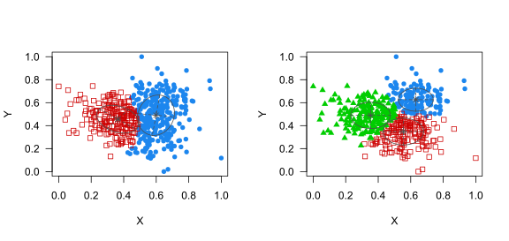
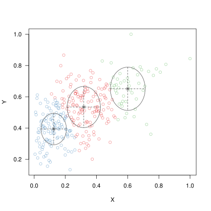

Cluster analysis: A skeptic’s guide
cluster analysis
correlational studies
research questions
I’ve been seeing more and more articles in applied linguistics that use clustering techniques to identify subgroups (“profiles”, “classes”, “types”) of language learners on the basis of cognitive test or questionnaire data. Often, the learners are then classified into clusters, and cluster membership is used as a predictor of an outcome such as performance on a language test. I have yet to see a study in applied linguistics that convinces me that identifying and interpreting learner clusters adds value over treating learner differences as continuous. I’ll explain why that is.
Refresher: What is cluster analysis?
Cluster analysis refers to a host of unsupervised learning techniques. That’s technobabble for saying that we’re given lots of multivariate observations and we’re looking for a sensible way to group these observations into a handful of categories. Crucially, there are no observations for which we know which category they belong to. This makes the problem a different one from supervised learning, which is useful in situations in which you know the correct label for at least some of the observations.
There are a lot of clustering algorithms, including k-means clustering, Gaussian mixture models, and latent profile and latent class analysis. It’s up to the user to specify which variables the clustering should be based on, to preprocess the data, and to set the desired number of clusters. The algorithms go about the task of identifying the clusters and of assigning the observations to them in rather different ways and are bound to end up with different cluster assignments. I’ll come back to this point below.
What are the clusters for?
Bauer and Curran (2004) distinguish between direct and indirect uses of cluster analysis. In direct uses of cluster analysis, the clusters themselves are of interest: researchers may want to figure out how many clusters there are, what proportion of observations (e.g., learners) belong to each cluster, where these clusters are located in the multivariate data space, etc. Cluster analysis, then, is used to discover some interesting structure in the data.
By contrast, in indirect uses of cluster analysis, the researchers don’t really care about the clusters themselves. It may seem a bit strange at first to do cluster analysis if you don’t really care about the clusters. But let’s say you’re dealing with a wonky data distribution \(P\) that is difficult to handle mathematically. Instead of handling \(P\) itself, however, you can try to first approximate \(P\) using a distribution \(\widehat P\) that is a combination of distributions \(Q_1, \dots, Q_C, C \geq 2\), that are easier to handle: \[P \approx \widehat P = \sum_{c = 1}^C\pi_cQ_c,\] with weights \(\pi_c > 0, c = 1, \dots C\), that satisfy \(\sum_{c=1}^C \pi_c = 1\). Distributions like \(\widehat P\) are called mixture distributions, and if \(Q_1, \dots, Q_C\) are Gaussian (i.e., Normal) distributions, they are called Gaussian mixtures. But neither the weights \(\pi_c\) nor the mixture components \(Q_c\) themselves are of any particular interest: they merely make it easier to do useful stuff related to \(P\), and there isn’t necessarily any implication that the mixture components (i.e., the clusters) carry any physical or cognitive meaning. For a nice example of such an indirect use of clustering algorithms, see Faul et al. (2026).
Indirect uses of clustering are fairly forgiving. Since the goal is merely to obtain a mathematically tractable approximation to \(P\), it is not necessarily a problem if different clustering solutions partition the distribution in rather different ways, as they do in Figure 1.1 In this case, the choice between competitive approximations may be guided by convenience: in some applications, solutions with fewer components may be preferred; in others, solutions with components of similar sizes or with components with diagonal covariance matrices may be easier to handle.
The situation is very different for direct uses of clustering. If we want to identify qualitatively distinct types of language learners based on some theoretical considerations, then a solution with two elliptical components (as in the left plot above) would have different consequences from a solution with three diagonal components (as in the right plot above, where the mixture components have diagonal covariance matrices). Further, even if competitive solutions have the same number of components, the shapes and sizes of the clusters may differ considerably between them, and learners may be assigned to different clusters in different solutions. If the cluster analysis serves a direct use, principled reasons for preferring one solution over another are needed.
Hand (2026, chapter 7) makes a similar distinction between using cluster analysis for discovery, where the clusters are interpreted substantively, and imposition, where the clusters are used as a compression technique for practical purposes.
In the social sciences, including applied linguistics, I suspect that most intended uses of cluster analysis are direct and discovery-oriented, in which case a few additional questions need to be addressed.
What clusters, exactly?
When explaining what cluster analysis does, I refrained from defining what clusters are. The reason is simple: There is no generally accepted definition of a cluster.
Hennig (2015) provides an excellent discussion of different notions of clusters and how these result in different suitable clustering techniques. Hand (2026, chapter 7) gives an example in which two different ways of conceptualising clusters results in partitionings that could hardly be any more different:
- In some applications, researchers may wish to minimise the maximum distance between observations assigned to the same cluster. This tends to result in fairly compact clusters that may, however, not have any separation between them.
- In other settings, researchers may prefer clusters in which each observation belongs to the same cluster as its closest neighbour. This may result in elongated clusters with a clean gap between them.
Since there is no universal definition of what a cluster is, none of these solutions is wrong per se.2 But this makes it all the more important for researchers to define formally what their definition of a cluster is, discuss how this definition is meaningful in light of the substantive theory, and argue why the clustering algorithm chosen is suitable for detecting the clusters so defined.
Admittedly, this is a tall order. But it is crucially important for users of clustering algorithms to appreciate how well their own notion of clusters aligns with that of the algorithm they’ve chosen. By way of an example, consider Latent Profile Analysis (LPA). As Bauer and Curran (2004) explain, LPA is based on the assumption that the \(d\)-dimensional distribution of the variables \(\boldsymbol Y = (Y_1, \dots, Y_d)\) is a Gaussian mixture with \(C \geq 1\) components, within each of which the variables are independent! Formally,
\[ \begin{align*} \boldsymbol Y &\sim P, \\ P &= \sum_{c=1}^C\pi_c \mathcal{N}_d\left(\boldsymbol \mu_c, \begin{pmatrix} \sigma^2_{c1} & 0 & \cdots & 0 \\ 0 & \sigma^2_{c2} & \ddots & 0 \\ \vdots & \ddots & \ddots & \vdots \\ 0 & 0 & \cdots & \sigma^2_{cd} \end{pmatrix}\right) \end{align*}, \] where \(\pi_c > 0, c = 1, \dots, C\), and \(\sum_{c = 1}^C \pi_c = 1\).
This is quite the assumption, and I’d like to see researchers justify explicitly that this is indeed what their own notion of clusters corresponds to. Just because the goal of a study is to identify “latent profiles” doesn’t mean that a tool called “Latent Profile Analysis” is most appropriate to the task.
Does the pipeline work?
I agree with Harrell (2024) that the onus is on researchers to demonstrate that their data contains meaningful clusters. To this end, I’d like researchers, once they have clearly defined what they consider to be clusters and once they have argued why the tool they’ve chosen aligns well with this definition, to demonstrate that their entire analytical pipeline does a reasonable job under realistic conditions.
Ideally, I’d like for researchers to demonstrate that their pipeline works in a simulation study. Having defined what clusters are to them, researchers can generate realistic data sets in terms of their size, the number of clusters present, the structure of these clusters, and the granularity of the data that will be collected (e.g., using 5-point scales instead of perfectly continuous variables). They can then examine if their pipeline can reliably recover the intended clusters.
Equally importantly, researchers ought to address the question: If our theory is wrong, would we know?
For instance, Chen et al.’s (2026) first research question is Can L2 learners be profiled concerning their (…) strategy use and writing self-efficacy? But it’s not clear to me how they could conceivably ever have answered no to this question—unless in the rather unrealistic scenario that none of their variables were correlated with one another. So, I’d like researchers to also generate realistic data sets in which there are, according to their own definition, no clusters, and see if their pipeline will accordingly not partition the data into clusters.
The point of such simulations is not merely to gauge whether the clustering algorithm chosen is appropriate. It is the entire workflow that is put to the test, including how the data are preprocessed and how the desired number of clusters is determined, when applied to data that isn’t infinitely fine-grained.
Incidentally, on the topic of choosing the desired number of clusters, researchers typically compare different solutions and select a suitable one on the basis of several criteria, including both numerical and substantive ones. This may be quite sensible. But since this choice is rarely made algorithmically, it becomes difficult to evaluate the statistical consequences of deciding on the desired number of clusters only once the data are in. The simulation study should take this into account.
What does the solution look like?
Once a defensible clustering has been obtained, I’d like to see it.
For low-dimensional data, a scatterplot matrix showing all bivariate relationships between the relevant variables in which the observations are coloured for their cluster memberships or in which projections of the mixture components are shown strikes me as a good start. For high-dimensional data, dimension-reduction techniques such as principal component analysis or multidimensional scaling may be useful.
The purpose of the visualisation is two-fold. First, it allows for visual inspection of whether the model assumptions are plausible in the actual data. Second, they allow readers to assess if their own notion of clusters accords with that of the researchers and of the tool used. For instance, Figure 2 would allow readers and reviewers to realise that the clusters identified by a Latent Profile Analysis aren’t nicely demarcated and that they themselves might prefer not to partition the data in this way—or indeed at all.

More visualisation may also help researchers and readers alike to realise, first, that the group labels often attached to clusters (‘high-aptitude, highly motivated learners’) may not be apt for all learners in the cluster, and second, that clustering is fundamentally about carving up continuous data into categories.
When running follow-up analyses, how is the uncertainty in the cluster assignments taken into account?
Researchers often carry out follow-up analyses with the cluster assignments. For instance, Chen et al. (2026) compared the learners assigned to the different clusters in terms of their L2 writing performance, whereas Roehr-Brackin et al. (2024) wanted to see if cluster membership interacted with a pedagogical intervention type when learning L2 Polish grammar.
But clustering algorithms don’t assign observations to clusters with absolute certainty: minor changes to the data elsewhere may cause some learners to be assigned to a different cluster, and some clustering algorithms reasonably assign cluster membership probabilistically. If cluster membership is used as a predictor in a follow-up ANOVA or regression model, I’d like for researchers to take into account the uncertainty about the membership assignments. Bakk and Kuha (2020) discuss the relevant literature.
Was it worth it?
Even if all the previous questions have been satisfactorily answered, I think researchers using clustering algorithms ought to address what all their effort has actually bought us.
While some clustering algorithms (including Latent Profile Analysis) assume that the observed data are generated by the (latent) clusters, the reconstructed clusters are a function of the observed data. As a result, any cluster assignment has to discard information in the data. The question is not whether any information has been lost, but how much useful information has been discarded.
For this reason, I think it is sensible, if cluster membership is used to model a distal outcome (e.g., L2 writing in Chen et al.’s study), for researchers to compare the resulting model with alternative models in which the variables that the clustering is based on are used directly. The latter models have to fit at least equally well as the former one does; the question becomes how much worse the cluster-based model fares. The reason why I think this is sensible is that my default assumption is that cognitive and attitudinal predictors affect outcomes such as L2 performance in a continuous rather than in a discrete way.
Conclusion
I appreciate that the questions asked above set a high bar. This is a consequence of the lack of a consensus about what clusters are in the first place, which ought to force researchers to clearly outline what their notion of clusters is, to argue why this notion is theoretically sensible, and to demonstrate that their analytical pipeline reconstructs clusters so defined if they are present and does not identify them if they are absent. This, I hope, should strike researchers wishing to apply clustering techniques to their own data as reasonable asks. Some of the other questions I’ve put forward are motivated by my own stance that cognitive and attitudinal predictors tend to have continuous rather than discrete effects on language learning outcomes.
References
References prefixed with an asterisk are recommended reading for applied linguists and other social scientists thinking about applying clustering techniques to identify hidden classes in their data.
Bakk, Zsuzsa & Jouni Kuha. 2020. Relating latent class membership to external variables: An overview. British Journal of Mathematical and Statistical Psychology 74. 340–362.
*Bauer, Daniel J. & Patrick J. Curran. 2004. The integration of continuous and discrete latent variable models: Potential problems and promising opportunities. Psychological Methods 9(1). 3–29.
Chen, Jing, Lawrence Jun Zhang & Xiaotong Chen. 2026. L2 learners’ self-regulated learning strategies and self-efficacy for writing achievement: A latent profile analysis. Language Teaching Research 30(1). 14–35.
Faul, Antoine, David Ginsbourger & Ben Spycher. 2026. Easy conditioning far beyond Gaussian. arXiv 2409.16003.
*Hand, David J. 2026. What’s the question? Deciding what you really want to know. Boca Raton, FL: CRC Press.
Harrell, Frank. 2024. The burden of demonstrating statistical validity of clusters. Statistical Thinking (blog), 6 October 2024.
*Hennig, Christian. 2015. What are the true clusters? Pattern Recognition Letters 64. 53–62.
Roehr-Brackin, Karen, Karoline Baranowska, Renato Pavlekovic & Paweł Scheffler. 2024. The role of individual learner differences in explicit language instruction. The Modern Language Journal 108. 815–845.
Scrucca, Luca, Chris Fraley, T. Brendan Murphy & Adrian E. Raftery. 2023. Model-based clustering, classification, and density estimation using mclust in R. New York, NY: CRC Press. See https://mclust-org.github.io/mclust/.
Toffalini, Enrico, Paolo Girardi, David Giofrè & Gianmarco Altoè. 2022. Entia non sunt multiplicanda… Shall I look for clusters in my cognitive data? PLoS ONE 17(6). e0269584.
Footnotes
I drew all figures using the
mclustpackage for R (Scrucca et al. 2023).↩︎In simulation studies, researchers often generate data from a known mixture model and study how well different algorithms can recover the components (e.g., Toffalini et al. 2022). In doing so, these researchers define the clusters to be the components of the generating mixture model. But this doesn’t mean that cluster solutions that fail to recover the components are wrong: such solutions may be recovering clusters according to a different, yet equally sensible, definition of what a cluster is.↩︎